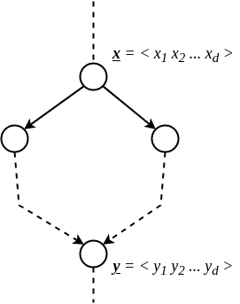
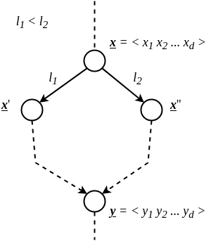
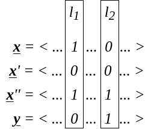

ADRC - Lesson 05
Indice
I protocolli di broadcasting visti nelle precedenti lezioni risultano parecchio dispendiosi nel caso in cui vengano eseguiti in una rete molto densa1.
Nel caso limite in cui la rete sia una clique2, il protocollo di flooding studiato ha una message complexity di \(\Theta(n^2)\).
Viceversa però, nel caso in cui la rete sia un anello o un albero, il protocollo è ottimale, ovvero verrà trasmesso un messaggio per ogni nodo, risultando
in una message complexity di \(\Theta(n)\).
Una buona idea sarebbe quindi quella di calcolare uno Spanning Tree della rete, e di eseguire il protocollo di flooding con uno scambio di messaggi ottimale. Precomputando lo spanning tree si potrebbe anche eseguire il protocollo tutte le volte che si desidera. Un problemma non banale che occorre però è il calcolo di uno spanning tree in maniera distribuita. Inoltre, pure assumendo di poter ottenere uno spanning tree con poche risorse, questa non è una struttura stabile. Infatti, in una rete reale capita molto spesso che delle connessioni si interrompano, e se si rimuove un arco da una rete con una struttura ad albero, essa verrà disconnessa3. In questo caso si dice la rete è 1-tollerant. In generale, un grafo si dice \(k\)-tollerant quando anche a fronte della rimozione di \(k\) archi, esso rimane connesso.
1 Labeled Hypercube
In questa sezione verrà studiato il problema del broadcasting su ipercubi e verrà mostrato come l'aggiunta della conoscenza della rete
da parte dei nodi, combintata alla simmetria della rete stessa, può portare alla creazione protocolli asintoticamente migliori del Flooding.
Generalmente in un contesto reale si vuole costruire reti che abbiano le seguenti proprietà:
- un diametro piccolo (\(O(1)\) o \(\texttt{poly-log}\)), in modo tale da ridurre i tempi di comunicazione tra i nodi.
- il grafo deve essere sparso, risparmiando in termini di risorse per la creazione di link.
Si osservi che riducendo il grado massimo di un grafo, come conseguenza si otterrà la sua sparsificazione4.
Un'altro vantaggio di un grafo sparso è la sua scalabilità, ovvero la capacità di non comportare eccessivi costi nel caso di aggiunta di nuovo nodo.
Per esempio, una clique non è molto scalabile, in quanto ogni volta che viene aggiunto un nuovo nodo bisogna creare \(n - 1\) nuovi links.
Invece l'aggiunta di un nodo su un grafo a forma di lista comporta l'aggiunta di un solo arco.
Non è tutto oro ciò che luccica: anche se un grafo a lista è estremamente scalabile e sparso, esso comporta alcuni cruciali svantaggi.
Il primo è che ha come diametro il valore massimo che si può presentare (\(n - 1\)).
Il secondo è la sua poca resistenza, infatti se si rompe anche solo un link il grafo si disconnette.
Contrariamente, una clique ha diametro minimo (ovvero 1) risultando in tempi di comunicazione ottimali.
In oltre prima di "rompersi" bisgona rimuovere almeno \(n - 1\) archi.
Una struttura più equilibrata rispetto alle precedenti è la struttura a griglia bidimensionale.
In griglia di \(n\) nodi composta da \(\sqrt{n}\) righe e colonne, il grado massimo è 4, mentre il diametro è \(2 \sqrt{n}\).
Inoltre è abbastanza scalabile, infatti si possono collegare tra di loro più griglie semplicemento affiancandole e aggiungendo \(\sqrt{n}\) archi.
Anche se \(O(\sqrt{n})\) è un buon miglioramento rispetto a \(n\), si può ottenere di meglio.
La struttura che offre un buon compromesso in termini di grado massimo, densità, resistenza, diamtero e scalabilità è l'ipercubo. È già noto che in un ipercubo \(d\)-dimensionale il numero di nodi è esattamente \(n = 2^d\), e di conseguenza \(d = \log_2{n}\). Inoltre ogni nodo ha grado esattamente \(d\), quindi il numero complessivo di archi è \(m = \frac{nd}{2} = \frac{n\log_2{n}}{2}\).
Consideriamo il problema del broadcasting su un ipercubo:
oltre alle solite restrizioni già viste (unique initiator, total reliability, bidirectional links e connectivity), in questa variante
si assume che ogni nodo sa di essere in un labeled hypercube \(d\)-dimensionale.
In questa particlare rete i link e i nodi sono etichettati come segue:
- ogni nodo è univocamente eithcettato con una stringa in \(\lbrace 0, 1 \rbrace^d\). Inoltre ogni nodo ha come vicino i nodi le quali etichette differiscono di un solo bit.
- Ogni arco è etichettato con un numero nell'intervallo \(\left[ d \right]\), in modo che tale etichetta rappresenta l'indice del bit per il quale i due nodi estremi differiscono (partendo a contare per esempio dal bit meno significativo).

Figura 1: \(d = 1\)

Figura 2: \(d = 2\)

Figura 3: \(d = 3\)
Si osservi che applicando semplicemente il protocollo Flood su questa rete la message complexity sarà \(O(n\log{n})\).
Di seguito alcune definizioni utili
DEF: (distanza di Hamming) date due stringhe \(\overline{x},\overline{y} \in \lbrace 0,1 \rbrace^d\), esse si dicono a distanza di Hamming \(d_{Ham}(\overline{x},\overline{y}) = k\) se le due stringhe differiscono esattamente di \(k\) simboli.
DEF: (Labeled Hypercube) un ipercubo etichettato \(d\)-dimensionale \(H_d = (V, E)\) è un grafo il cui insieme dei nodi è l'insieme \(V \equiv \lbrace \overline{x} \mid \overline{x} \in \lbrace 0,1 \rbrace^d \rbrace\), mentre l'insieme degli archi è \(E \equiv \lbrace (\overline{x},\overline{y}) \in V^2 \mid d_{Ham}(\overline{x},\overline{y}) = 1 \rbrace\).
Fact 1: un ipercubo etichettato \(d\)-dimensionale \(H_d\) ha diametro esattamente \(d = \log_2{n}\).
Proof: per dimostrare il fatto 1 è necessario dimostrare che per ogni coppia di nodi \(\overline{x},\overline{y} \in V\)
esiste un percorso \(P = \overline{x} \rightsquigarrow \overline{y}\) tale che la sua lunghezza \(|P|\) è minore uguale
di \(d\).
Consideriamo quindi due differenti nodi \(\overline{x} = \langle x_1, x_2, ..., x_j, ..., x_d \rangle\) e \(\overline{y} = \langle y_1, y_2, ..., y_j, ..., y_d \rangle\).
Scorrendo in parallelo i caratteri delle due stringhe, prima o poi si arriverà a un indice \(j_1\) tale che
\(x_{j_1} \neq y_{j_1}\) (perchè abbiamo assunto che \(\overline{x}\) e \(\overline{y}\) sono differenti).
A questo punto, per costruzione dell'ipercubo etichettato, esisterà un suo vicino \(\overline{x}'\)
tale che \(x'_{j_1} = y_{j_1}\).
Tale vicino sicurmanete esiste, dato che \(\overline{x}\) e \(\overline{x}'\) sono a distanza di Hamming 1.
Consideriamo quindi l'arco \((\overline{x}, \overline{x}')\) come primo arco del cammino \(P\).
A questo punto, \(\forall i \leq j_1\) avremo che \(x'_i = y_i\), quindi partendo dall'indice \(j_1 + 1\) continuiamo
a scorrere in parallelo le due stringhe \(\overline{x}'\) e \(\overline{y}\).
Se arrivati all'indice \(d\) non si sono incontrati caratteri differenti, allora \(\overline{x}' = \overline{y}\), e quindi
il cammino è concluso.
Se invece \(\overline{x}' \neq \overline{y}\) certamente esisterà un indice \(j_1 < j_2 \leq d\) tale che \(x'_{j_2} \neq y_{j_2}\).
Come prima, esisterà per forza un nodo \(\overline{x}''\) vicino di \(\overline{x}'\) tale che \(x''_{j_2} = y_{j_2}\).
Appendiamo quindi l'arco \((\overline{x}', \overline{x}'')\) al cammino.
Proseguendo in questa maniera, prima o poi si arriverà ad un nodo \(\overline{x}^{\star} = \overline{y}\).
Nel cammino vengono considerati nodi a distanza di Hamming 1 l'uno dall'altro, e ad ogni arco preso ci si
"avvicina" di 1 alla destinazione.
Dato che al più \(\overline{x}\) è distnte \(d\) da \(\overline{y}\), allora il cammino costruito con il precedente metodo
può essere lungo al più \(d\) \(\square\).
Un'altra caratteristica importante dell'ipercubo è la sua scalabilità. Infatti si può estendere un ipercubo di dimensione \(d\) con un altro ipercubo di dimensione \(d\), semplicemente aggiungendo un arco tra i nodi analoghi dei due ipercubi.

Figura 4: Generazione Ipercubo
Inoltre l'ipercubo è una struttura abbastanza stabile, in quanto per essere disconnessa è necessario rimuovere
almeno \(d\) archi.
Di seguito un confornto tra le figure precedentemente descritte.
| Grafo | Diametro | Grado |
|---|---|---|
| Clique | \(\Theta(1)\) | \(\Theta(n)\) |
| Lista | \(\Theta(n)\) | \(\Theta(1)\) |
| Griglia | \(\Theta(\sqrt{n})\) | \(\Theta(1)\) |
| Ipercubo | \(\Theta(\log{n})\) | \(\Theta(\log{n})\) |
1.1 Hyperflood Protocoll
Il protocollo Hyperflood è molto semplice, e sfrutta fortemente il fatto che i nodi posseggono delle conoscenze globali
della struttura della rete.
In maniera informale il protocollo funziona nella seguente maniera:
- l'unico nodo
INITIATORinvia il messaggio a tutti i suoi nodi vicini. - se un qualsiasi nodo riceve il messaggio da un arco etichettato con il numero \(\ell\), allora inoltrerà il messaggio a tutti i suoi vicini connessi dagli archi con indice \(\ell' < \ell\).
if self.status == "INITIATOR":
spontaneously:
send(self.message) to self.neighbors
else:
recieving(message):
l = message.fromEdge
for i in range(1,l):
send(message) to self.neighbors[i]
Questo protocollo può essere osservato in maniera ricorsiva.
Ovvero quando un nodo riceve il messaggio dall'arco \(\ell\) diventa l'INITIATOR del sotto-ipercubo di dimensione \(\ell' = \ell - 1\).
1.1.1 Correttezza
Ciò che si vuole dimostrare è che ogni nodo dell'ipercubo viene informato. Per prima cosa però è necessario enunciare è dimostrare il seguente lemma:
Lemma 1 Per ogni coppia di nodi \(\overline{x},\overline{y}\) esiste sempre un cammino con etichette decrescenti da \(\overline{x}\) a \(\overline{y}\).
Nel protocollo Hyperflood il messaggio verrà inoltrato esattamente attraverso quel cammino.
Proof: consideriamo due nodi a caso \(\overline{x} = 100010100 \) e \(\overline{y} = 110001000 \).
Consideriamo la procedura per costruire un cammino usata nella dimostrazione del Fact 1, e consideriamo un ordinamento degli indici inverso (in senso decrescente
a partire da sinistra, per intenderci).
Dato che i due nodi differiscono per i soli simboli in posizione \(8,5,4,3\), un cammino che li collega è composto dagli archi con etichette \(8,5,4,3\), ovvero
da archi con etichette decrescenti \(\square\).
1.1.2 Message Complexity
La message complexity del protocollo Hyperflood è ottima, ovvero vengono trasmessi esattamente \(n-1\) messaggi, uno per ogni nodo (sorgente esclusa).
Per dimostrarlo è necessario dimostrare che il grafo delle comunicazioni del protocollo è un albero, e che quindi ogni nodo non può ricevere più di una
volta lo stesso messaggio.
Supponiamo per assurdo che esiste un nodo \(\overline{y}\) che riceve due copie del messaggio. Se così fosse nel grafo delle comunicazioni esisterebbero due cammini disgiunti che da un nodo \(\overline{x}\) portano ad \(\overline{y}\). Notare che \(\overline{x}\) potrebbe anche essere la sorgente \(\overline{s}\).

Certamente, per costruzione dell'ipercubo etichettato, i due cammini iniziano per degli archi etichettati con \(\ell_1, \ell_2\) differenti. Senza perdita di generalità, assumiamo che quello di sinistra inizi con l'arco \(\ell_1\), quello destro con \(\ell_2\) e che \(\ell_1 < \ell_2\). Sia \(\overline{x}'\) il nodo raggiunto da \(\ell_1\) e \(\overline{x}''\) quello raggiunto da \(\ell_2\).

Per costruzione, avremo che:
- \(\overline{x}\) differisce da \(\overline{y}\) almeno per i bits in posizione \(\ell_1\) ed \(\ell_2\)
- \(x'_{\ell_1} = y_{\ell_1}\) e \(x'_{\ell_2} \neq y_{\ell_2}\)
- \(x''_{\ell_2} = y_{\ell_2}\) e \(x''_{\ell_1} = y_{\ell_1}\)

Figura 8: Esempio di una possibile situazione
Importante osservare anche che entrambi i cammini, quello di sinistra e quello di destra, procedono per etichette decrescenti.
Ciò significa che dal cammino di sinistra verranno toccati solo nodi che differiscono da \(\overline{x}'\) per i bits con indice \(\ell_i < \ell_1\).
Questo implica che il cammino di sinistra porterà al nodo \(\overline{y}\) senza mai cambiare il bit in posizione \(\ell_2\), e questo è assurdo \(\square\).
1.1.3 Time complexity
Come già discusso nelle altre lezioni, ha senso parlare di time complexity solamente sotto le assunzioni di sincornismo della rete e di limitatezza nel
ritardo di trasmissione dei messaggi.
Analizziamo quindi la complessità temporale in un sistema sincrono nel quale il tempo di trasmissione vale una unità temporale.
In tale sistema con tali assunzioni la time complexity ottima, ovvero \(O(\log{n})\).
La precedente affermazione si può dimostrare per induzione sulla distanza di Hamming dei nodi dalla sorgente. Più in particolare si vuole dimostrare che per ogni \(j \leq d\) (dove \(d\) è la dimensione dell'ipercubo) e per ogni nodo \(x\) a distanza di Hamming \(j\) dalla sorgente, il nodo \(x\) sarà informato al tempo \(j\). \[ \forall j \in \left[ d \right], \forall x \in \lbrace 0,1 \rbrace^d : d_{Ham}(s,x) = j \implies x \mbox{ sarà informato al tempo } j \]
Per \(j = 1\) questo è vero perché per definizione del protocollo la sorgente \(s\) manderà il messaggio a tutti i suoi vicini, i quali formano l'insieme
di tutti i nodi a distanza di Hamming 1 da \(s\).
Per ipotesi induttiva supponiamo questo sia vero per \(j-1\), ovvero che tutti i nodi in \(L_{j-1}\) sono stati informati al tempo \(t=j-1\). Sappiamo che per ogni nodo \(x \in L_j\) esiste sempre un cammino con tutte etichette decrescenti dalla sorgente \(s\) ad \(x\). Dato che però le etichette sono decrescenti, allora certamente \(x\) è raggiunto da un nodo \(y\) nell'insieme \(L_{j-1}\). Per ipotesi \(y\) è stato informato al momento \(j-1\) e inoltre il messaggio impiega un solo istante per percorrere l'arco \((y,x)\), perciò \(x\) sarà informato al tempo \(t = (j-1) + 1 = j\) \(\square\).